在一个网格中显示多个图形
问题
为了便于比较，你可能需要显示几个相关的图形在一个网格中。
解决方案
使用GraphicsGrid在mathematica6或GraphicsArray在较早的版本。
您可以使用表来将几个图形分组在一起，但这使你几乎无法控制图像的布局。
GraphicsGrid可以控制网格、框架、间距、分隔符和其他选项的大小。
网格的维是从作为第一个参数传递的图形列表的维中推断出来的。
你可以用Partition方便地将线性列表转换为所需的二维。
说了这么多似乎很抽象，我们举一个例子。
With[{a = 2},(*With函数，如果不懂，可以查帮助文档*)
GraphicsGrid[(*GraphicsGrid函数，用来把图形组成一个大网格的*)
Partition[(*划分的函数，查看帮助文档*)
Table[
Plot[0.5 Sin@(2 x), {x, 0, 2 Pi},(*plot的函数以及变量的范围*)
Mesh -> m, ImageSize -> 300, Frame -> True, FrameLabel -> "网格是" <> ToString@m],(*plot的样式*)
{m, {None, Automatic, All, Full, 16, 50}}],(*Table的选项*)
a],(*Partition的选项*)
Frame -> All](*GraphicsGrid的选项*)
]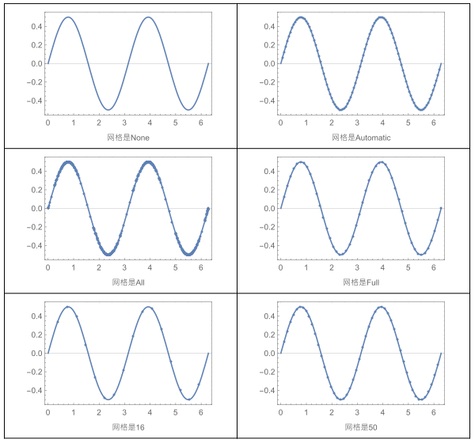
讨论
除了GraphicsGrid之外，Mathematica还提供了GraphicsRow和GraphicsColumn.GraphicsGrid提供横向布局，GraphicsRow提供纵向布局
尽管他们这些布局都比较简单但是不要小看他们，用这些简单的布局函数可以组建很复杂的图像。
在这里，我将演示如何使用GraphicsRow在另一个GraphicsRow旁边显示一个GraphicsColumn。Frame可以围绕行或列绘制(Frame->True)或另外划分的所有元素(Frame->All)。
看下面这个例子
With[
{p1 = Table[
Graphics[{EdgeForm[Black], FaceForm[LightYellow],
Polygon[Table[
{Cos[2 Pi k/p], Sin[2 Pi k/p]}, {k, p}]]},
ImageSize -> 350],
{p, 4, 8, 2}]},
GraphicsRow[{
GraphicsColumn[p1, Frame -> True],
GraphicsRow[p1, Frame -> True]},
Frame -> All, ImageSize -> 450]]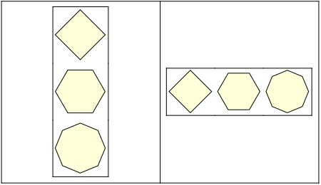
给图像加图例
问题
你现在一个图中有几个曲线，你希望使用图例来标识这几个曲线。
解决方案
使用这个函数包 PlotLegends package
这个包里面有这几个选项PlotLegend, LegendPosition, 和LegendSize options
具体用法，看下面这个例子。
Needs["PlotLegends`"];
Plot[{Sin@x, Sin@(2 x)}, {x, 0, 2 Pi},
PlotStyle -> {Directive[Black, Dotted], Directive[Black, Dashed]},
PlotLegend -> {"Sin x", "Sin 2x"},
LegendPosition -> {1, 0.1}, LegendSize -> 0.75]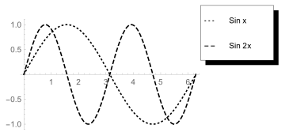
调用包首先需要用Needs函数，然后才能操作。LegendsPosition是指图例的 左下角的位置
讨论
有多种方式进一步调整Legends的外观。你
1.LegendShado(图例阴影)你可以关闭或控制投影的偏移;
2.使用 LegendSpacing, LegendTextSpace, LegendLabelSpace,和 LegendBorderSpace控制各种元素的间距;
3.使用 LegendTextDirection, LegendTextOffset, LegendSpacing, 和 LegendTextSpace控制标签
4.用LegendLabel 和 LegendLabelSpace给图例一个标签
注意 LegendTextSpace的效果，这有点违反直觉，它表示文本空间与键盒大小的比例，因此较大的数字实际上缩小了图例。
LegendSpacing 控制每个键盒大小为1的范围内的空间。
扯了这么多，太抽象像了，看例子。然后再回过来看这些。
LegendShadow (阴影)
step1
我先规定样式,为了方便后面操作
Needs["PlotLegends`"];
p = Sequence[
PlotStyle -> {Directive[Black, Dotted], Directive[Black, Dashed]},
PlotLegend -> {"Sin x", "cos 2x"}, LegendPosition -> {1, 0.1},
LegendSize -> 0.7, ImageSize -> 350];第一个例子：
Plot[{Sin@x, Cos@x}, {x, 0, 2 Pi},
Evaluate[p], LegendShadow -> None, LegendSpacing -> 1/2, LegendTextSpace -> 10]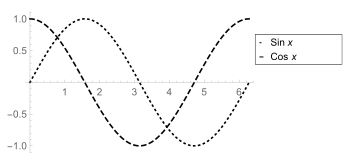
说明
Evaluate[p]的作用是让p这个样式生效。LegendShadow -> None表示不加阴影
LegendSpacing
我们看下面这个例子
GraphicsRow[{Plot[{Sin[x], Cos[x]}, {x, 0, 2 Pi},
PlotLegend -> {"sine", "cosine"}, LegendSpacing -> 0],
Plot[{Sin[x], Cos[x]}, {x, 0, 2 Pi},
PlotLegend -> {"sine", "cosine"}, LegendSpacing -> 1]},
ImageSize -> 700]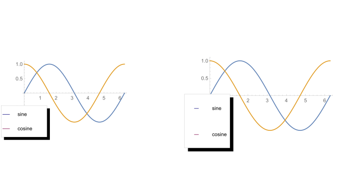
LegendTextSpace
对比下面这两个图，可以看出差别。
Row[{Plot[{Sin[x], Cos[x]}, {x, 0, 2 Pi}, Evaluate[p],
PlotLegend -> {"sine", "cosine"}, LegendTextSpace -> 10],
Plot[{Sin[x], Cos[x]}, {x, 0, 2 Pi},
PlotLegend -> {"sine", "cosine"}, Evaluate[p],
LegendTextSpace -> 5]}]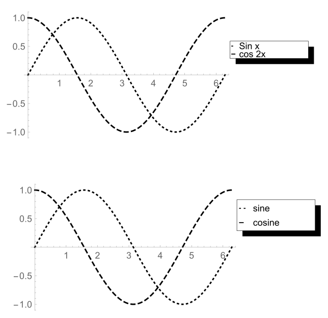
有时你想要创建一个更自定义的图例。在这种情况下，考虑
Legend和ShowLegend。
自定义2D图形
问题
你希望创建包含线条、正方形、圆形或者其他几何对象的图形
解决方案
Mathematica有一个通用的图形函数集合：
点Point
线Line
矩形Rectangle 圆Circle 圆盘 Disk,
多边形Polygon
箭头 Arrow, 栅格Raster
文本Text
我们使用这些基本元素创造一个很复杂的图形，雪人。
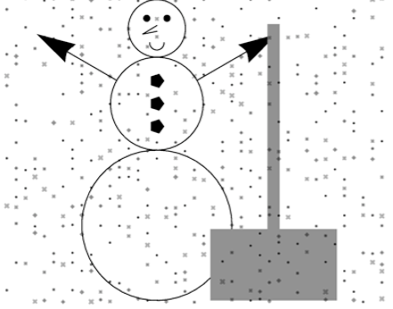
代码太长了，这里省略
讨论
充分利用图形原语的关键之一是学习如何将它们与图形指令结合起来。
有些指令非常具体，而另一些则非常笼统。
例如，Arrowheads只适用于Arrow，而Red和Opacity适用于所有基本元素。
一个指令将适用于它后面的所有对象，受限于在列表中嵌套对象所创建的作用域。
例如，在下面的图形中，Red适用于Disk和Rectangle，但不适用于Line(线条)。
因为Line(线条)在其自己的范围内具有特定的颜色和粗细。
Graphics[{Red, Disk[{-2, -2}, 0.5],
Rectangle[], {Thickness[0.02], Black,
Line[{{-1.65, -1.65}, {0, 0}}]}}, ImageSize -> Small]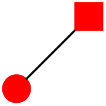
Color(颜色)
Color指令可以使用指定的颜色:
红色、绿色、蓝色、黑色、白色、灰色等
你还可以使用RGBColor 或 Hue、 CMYKColor 、 GrayLevel 和 Blend 来合成颜色。
在Mathematica 6或更高版本中，这些指令除了定义颜色或灰色设置的值外，还可以使用不透明度值。Blend(混合)也是mathematica6的新功能。
Graphics[Table[{Hue@x,Rectangle[{x,1},{x+0.1,2}]},{x,0,0.99,0.1}]]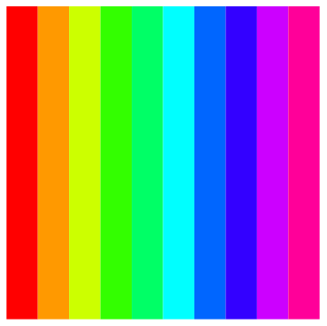
Graphics[Table[{Hue@x, Rectangle[{x, 1}, {x + 0.05, 2}],
Blend[{Hue[x], Hue[x + 0.05]}, 0.25],
Rectangle[{x + 0.05, 1}, {x + 0.1, 2}]}, {x, 0, 0.99, 0.1}]]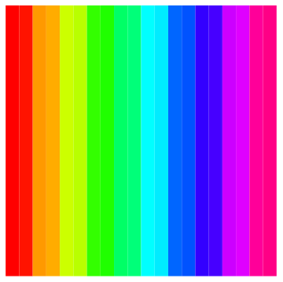
Thickness(粗细)
Thickness[r]是相对于图形的总宽度指定的，因此，刻度是随尺寸变化而变化的。 AbsoluteThickness[d]的单位是打印机点(1/72英寸)，不缩放。
Thick 和 Thin 是AbsoluteThickness的预定义版本(分别为0.25和2)。
Thickness指令适用于包含线条(如线条、多边形、箭头等)的元素。
(*注意给线条加粗，需要把命令放到Line的前面*)
Graphics[{
{Line[{{0, -1}, {0, 1}}]},
{Thin, Line[{{0.5, -1}, {0.5, 1}}]},
{Thick, Line[{{1, -1}, {1, 1}}]},
{AbsoluteThickness@3, Line[{{1.5, -1}, {1.5, 1}}]}
}]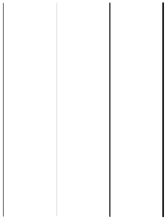
用文本注释图形
问题
你想把文本加到你的图像上
解决方案
使用带样式的文本指定字体族、字体替换、字体大小、字体权重、字体倾斜、字体跟踪、字体颜色和背景
Graphics[{
Text[Style["大小为12的默认字体", FontSize -> 12], {0, 0}],
Text[Style["大小为16的斜体字体", FontSize -> 16,
FontSlant -> Italic], {0, -.2}],
Text[Style["大小为14的粗体字体", FontSize -> 14,
FontWeight -> Bold], {0, -.4}],
Text[Style["大小为14的Arial字体 ", FontSize -> 14,
FontFamily -> "Arial"], {0, -.6}],
Text[Style["大小为14的Aria的缩小l字体", FontSize -> 14,
FontFamily -> "Arial", FontTracking -> "Narrow"], {0, -.8}],
Text[Style["大小为14的黑底白字", FontSize -> 14, FontWeight -> Bold,
FontColor -> White, Background -> Black], {0, -1}]}]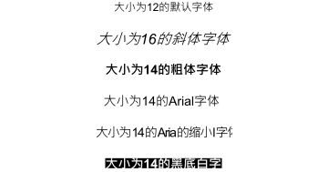
讨论
下面这个图中我将演示各种绘图选项，它们包含向整个图形、框架和轴添加标签的选项。
op = {PlotLabel ->
Style[0.5 Sin [2 x], FontSize -> 18, FontFamily -> "Arial"],
AxesLabel -> {"x", "y"},
LabelStyle ->
Directive[Bold, FontFamily -> "Arial", FontSize -> 13],
Frame -> True, FrameLabel -> Style["正弦曲线", FontSlant -> Italic],
ImageSize -> 350};
Plot[0.5 Sin[2 x], {x, 0, 2 Pi}, Evaluate@op]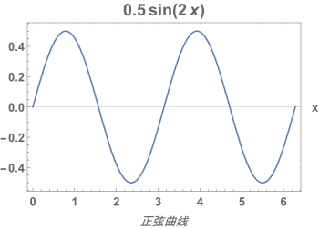
创建自定义的箭头
问题
你希望创建带有自定义箭头、尾部和连接线的箭头，以便在图形注释中使用
解决方案
With[{h = Graphics[{Disk[{0, 0}, 0.75]}],
t = Graphics[
{Line[{{-0.5, 0}, {0.5, 0}}],
Line[{{0, -0.6}, {0, 0.6}}],
Line[{{0.2, -0.6}, {0.2, 0.6}}]}]},
Graphics[{Arrowheads[{{0.05, 1, h}, {0.1, 0, t}}],
Arrow[{{0, 0}, {0.25, 0.25}}]}, ImageSize -> 200]]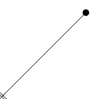
讨论
箭头有很多功能。
你可以很容易地创建双端箭头和沿某个方向具有多个箭头的箭头。
Graphics[
{Arrowheads[{-0.05, 0.05}], Arrow[{{0, 0}, {1, 0}}],
Arrowheads[{0, 0.05, 0.05, 0.05, 0.05}],
Arrow[{{0, -0.2}, {1, -0.2}}]}, ImageSize -> 350]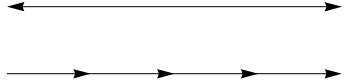
你也可以考虑使用箭头来标记箭头，但Mathematica没有专门处理这种“箭头”，所以你可能会得到不希望的效果。
Graphics[
{Arrowheads
[{0, {Automatic, 0.5,
Graphics[{Text[
Style["Label", FontSize -> 14, FontWeight -> Bold]]}]}, 0.1}],
Arrow[{{0, 0}, {-0.25, 0.25}}]}]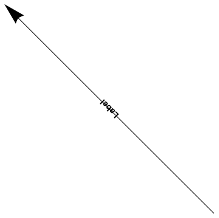
一个更好的选择是使用文本或Inset的旋转，或者使用GraphPlot或相关函数来定位文本
Inset比手动定位文本的优点是:如果你不介意标签不平行于箭头，你可以自动定心.
Graphics[{Arrowheads[{0.1}], Arrow[{{0, 0}, {-0.25, 0.25}}],
Rotate[Text[
Style["Label", FontSize -> 14, FontWeight -> Bold], {-0.14,
0.11}], -Pi/4]}, ImageSize -> 350]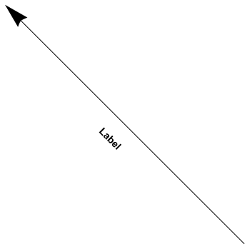
Graphics[{Arrowheads[{0.1}], Arrow[{{0, 0}, {-0.25, 0.25}}],
Inset[Text[Style["Label", FontSize -> 14, FontWeight -> Bold]]]},
ImageSize -> Small]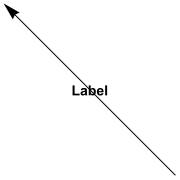
2D图部分完！